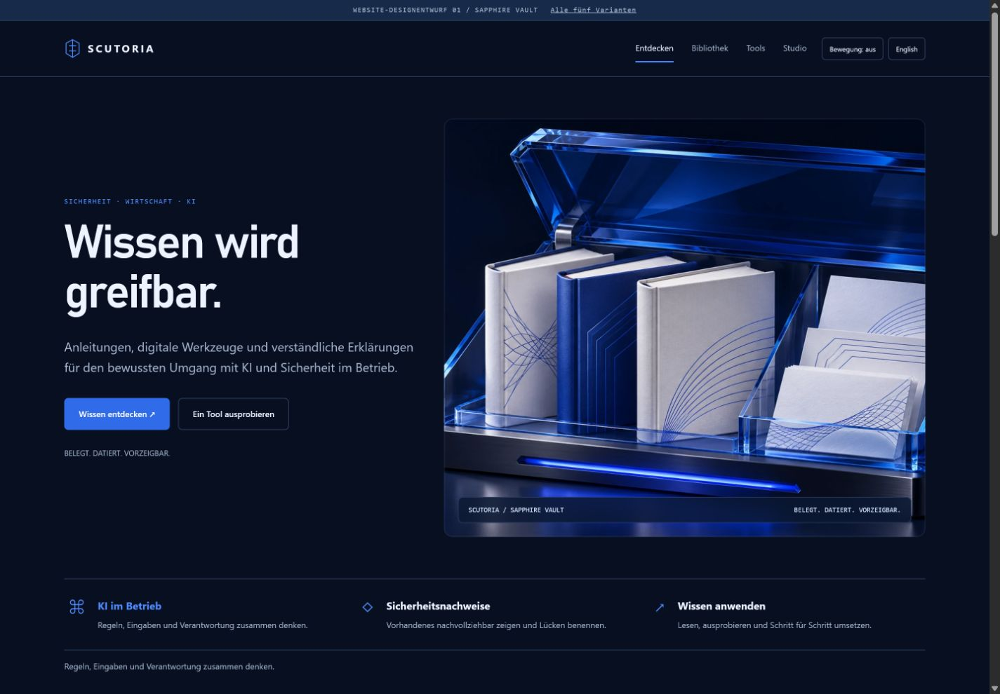
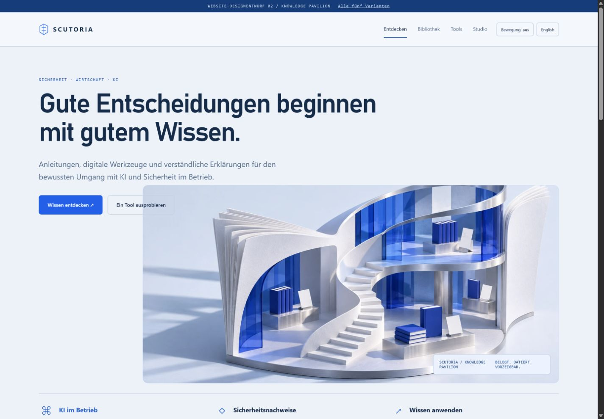
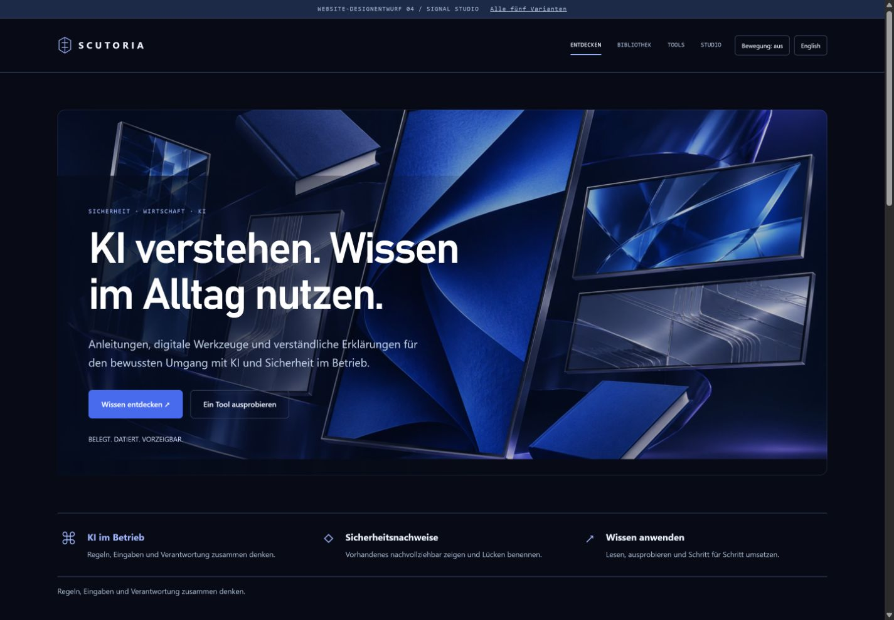
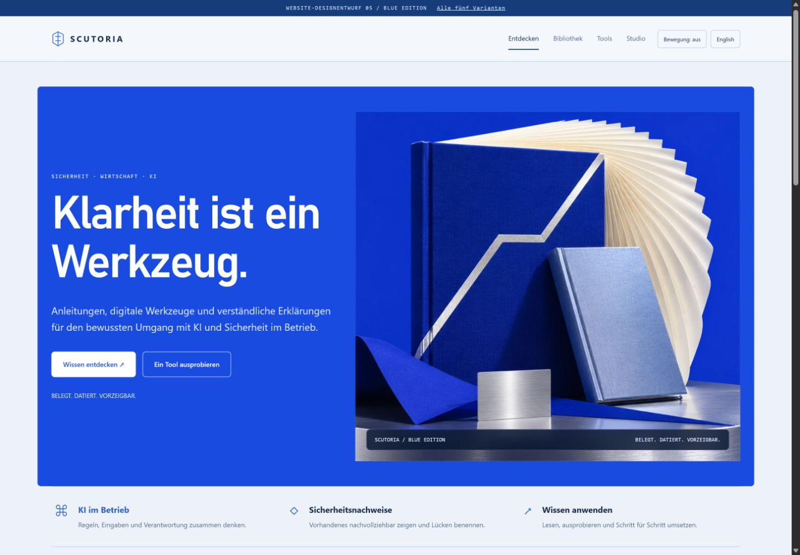

VARIANTE 01
Sapphire Vault
Dunkles Navy, saphirblaues Glas und greifbare Produktinszenierung. Ruhige Premiumwirkung mit räumlicher Tiefe.
Jeweils mit Startseite, Bibliothek, Produktdetail, Tools und Studio · Desktop und Mobil · interaktive Prototypen

Dunkles Navy, saphirblaues Glas und greifbare Produktinszenierung. Ruhige Premiumwirkung mit räumlicher Tiefe.

Helle Architektur, viel Licht und eine klare Verlagssprache. Wissen wirkt zugänglich und hochwertig.

Ein vernetzter Betrieb als interaktive Landkarte. Seitliche Navigation und sichtbare Zusammenhänge.

Filmische Bildbühne, horizontale Sammlungen und ein eigenes Lernstudio für Videos und Reels.

Kräftiges Ultramarin, große Typografie und markante Buchobjekte. Eigenständig und besonders wiedererkennbar.